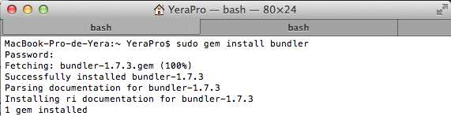

Lo primero que hay que hacer es instalar RVM, con los siguientes comandos:
Comprobamos que bundler está instalado:
Al comprobar que no tenemos instalado bundler lo haremos con estos comandos:

Ahora pasaremos a instalar las gemas sinatra y twitter:
Iremos a github:
Como ya tengo el repositorio instalado en mi ordenador solo tendre que subir los cambios ya que ya tendré dada de alta la contraseña etc
Una vez hecho todos los pasos que nos indica el git para crear nuestro repositorio, tendremos que usar gitpages, yo lo he hecho directamente: